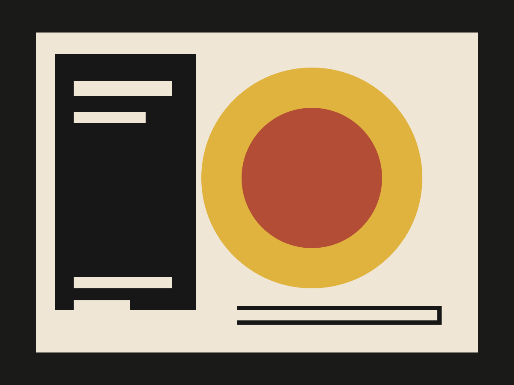
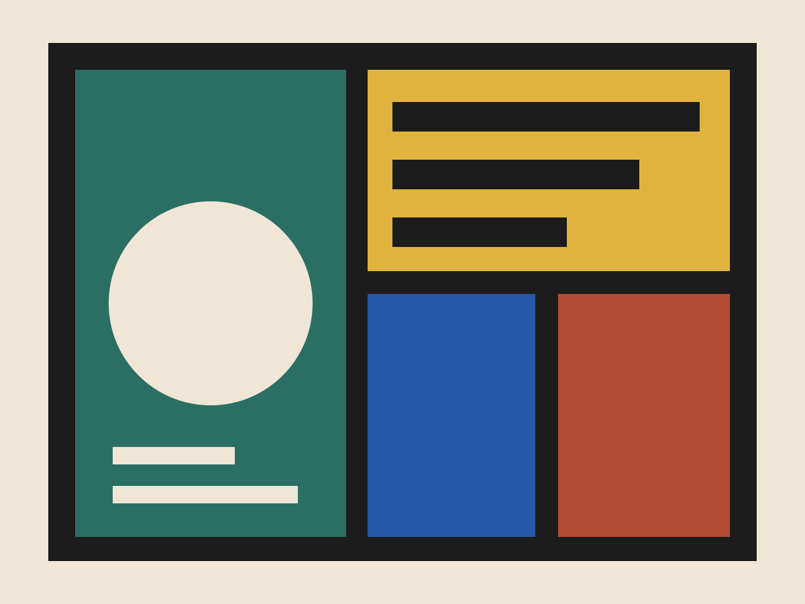
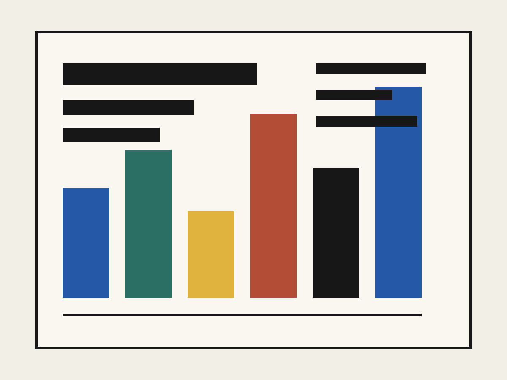

Lumen Works
为创意制作工作室进行温暖而锐利的身份更新，以光感色彩和清晰框架作为识别线索。
- 范围
- 品牌更新、发布套件、社交资产
- 角色
- 身份设计、艺术指导

用光感建立品牌记忆点。
更新保留了工作室原有的亲和力，同时提高视觉上的专业度。明亮色块与黑色框架形成一套可延展的发布语言，适用于提案、社交和作品展示。


为创意制作工作室进行温暖而锐利的身份更新，以光感色彩和清晰框架作为识别线索。

更新保留了工作室原有的亲和力，同时提高视觉上的专业度。明亮色块与黑色框架形成一套可延展的发布语言，适用于提案、社交和作品展示。

